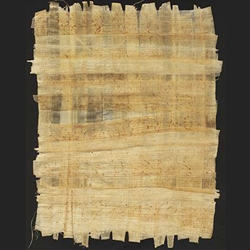

Bonjour et bienvenue à mon site! Si vous voulez savoir plus sur le sujet du papier, vous êtes à la bonne place. Le papier est très ancien et depuis sa création, on a adapté à l’utiliser pour écrire, dessiner et pour créer des œuvres d’art merveilleuses. Il y a plusieurs différents styles comme l’origami, le papier découpé et les sculptures en papier.
Avez-vous déjà observé une pièce de papier en forme d’une grue en pensant, “comment est-ce que ces artistes ont créé cela?” Plusieurs personnes appellent ce style d’art de l’origami. Pourtant l’origami est juste une section dans l’immense mouvement des œuvres en papier. Les arts en papier sont une forme d’art qui manipule le papier pour arranger les configurations. Certains artistes coupent le papier pendant que d’autres plient le papier sans d’autres outils. Les œuvres en papier ont une vaste histoire avec des différentes variations mais ils utilisent tous le papier comme moyen d’art.
Les origines des œuvres en papier peuvent être tracées à quand le papier a était créé. Une version ancienne du papier était appelé papyrus, nommé après la plante. La tige de la plante papyrus a été coupée et pressée ensemble. Ensuite le papyrus a été laissé pour sécher. Le résultat de ce processus a été utilisé pour l’écriture ou pour dessiner. Cette version ancienne du papier est apparue en Égypte en 2400 avant l’ère courante. Le papier qu’on reconnaît aujourd’hui a été présenté par un courtisan appelé Ts’ai-Lun de Lei-Yang en Chine à l’empereur en 105 l’ère courante. Pourtant c’est probable qu’il y avait déjà la fabrication du papier en Chine. Toutefois Ts’ai-Lun a aidé beaucoup à partager la connaissance de la fabrication du papier. Ils ont pris de la fibre végétale et l’ont trempé et l’ont battu. Ça a créé un mélange qu’ils ont mis à travers un tamis de toile pour créer une forme rectangulaire et pour le sécher.
Les styles et techniques des œuvres en papier ne varient de personne à personne. L’art du papier a changé durant les années. Aujourd’hui on peut chercher facilement des instructions de comment créer des œuvres en papier, sur l’internet ou dans des livres par exemple. Plusieurs combinent les techniques et différentes variations pour former des grandes œuvres et installations. C’est la combinaison de couleurs, flexibilité, techniques, créativité et longue histoire qui donne les œuvres en papier ces uniques aspects et créations. Donc allez dehors, trouvez et appréciez l’art autour de vous.